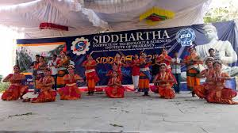
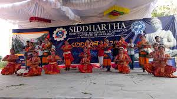

contact details:
phone number:8978918872
email-id:sureshraju19980@gmail.com
photos:
Siddhartha Institute of Technology & Sciences (SITS) is a premier Engineering Institution run by the Gouthami Educational Society is located in the city of Hyderabad, the capital of Telangana. The institution was established in 2008 based on the values and ideals cherished by our visionary and enterprising Chairman, Mr. C. R. Jagadish. With a track record of over 11 years in higher education, Siddhartha Institute of Technology and Sciences is dedicated to imparting quality education and promote excellence in academic pursuits in the fields of Science, Engineering, Technology, and Management. The institution’s primary objective is to turn out high caliber professionals to meet the rapidly growing needs of industry and academia.
Siddhartha Institute of Technology & Sciences (SITS) is housed in magnificently built buildings with all infrastructural facilities within a lush green campus at Narapally, Hyderabad. Since its inception, it has slowly established itself as a prime destination for high-quality education. The college currently runs 6 B.Tech courses (CSE, ECE, EEE, Mech. & Civil), 6 M.Tech. courses (in ECE, EEE, CIVIL, MECH, CSE) besides MBA. The strength of the institute lies in its modern classrooms, well-equipped laboratories and trained faculty.
SITS is affiliated to JNTU Hyderabad for its technology courses. The institution has recently been accredited by NAAC and preparing for NBA accreditation as well.
SITS believes in all-round development of its students and faculty members and leaves no stone unturned to ensure that the best of facilities are provided for the same. The campus boasts of the following unique facilities o make this happen:
Spacious playgrounds for football, cricket, basketball, etc
Hostels for boys and girls with 24×7 facilities and hygienic food
Canteen for the use of day scholars and staff
Transport facilities for students and staff
Secure campus with widespread CCTV coverage
Medical facilities for boarders
A 500+ seater auditorium
Excellent computing facilities with Internet and Wi-Fi
And many more
We invite everyone to join us on our journey towards excellence.

 
